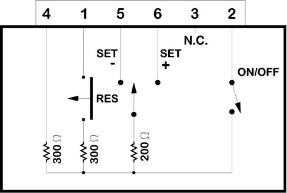

5580A CRUISE CONTROL SYSTEM
- Path
- Descriptions > 55 ELECTRICAL EQUIPMENT > 5580 SPECIAL ACCESSORIES > 5580A CRUISE CONTROL SYSTEM
- Kind
- system description
- Applies to
- all engines; all production periods
- Interactive page
- https://sloeber94.github.io/elrnDB-aBrrSpdr/en/#/946001239
Applies to: all engines; all production periods
INTRODUCTION
The Cruise Control system automatically maintains a cruising speed set by the driver.
It consists of a lever on the steering wheel stalk unit with two rotary wheels and a button.
The lever is connected to the engine control unit that manages system operation.
Operation is controlled by means of the RES (resume) button besides the lever, vertical operation of the lever (set +/set -) and the on/off wheel:

1 - RES (resume) button recalls a stored speed
2 - wheel switch (Cruise symbol: Cruise attivated; O: Cruise deactivated)
3 - movement of lever to store increase (+) or decrease (-)
OPERATION
The system governs engine operation - and more specifically the motorised throttle - directly so that a constant engine speed can be maintained independently of changes in driving conditions.
The driver performs the following controls:
- stores speed achieved, discrete and continuous speed increase (set +);
- stores speed achieved, discrete and continuous speed dcrease (set -);
- recalls stored speed (resume).
A warning light on the dashboard activated by the engine control unit indicates system operation or deactivation status.
To activate the system, operate the main switch (On / Off) to On position. Then adjust the vehicle to the required speed and operate the wheel to + or - : the system comes on at the current speed; the accelerator may be released to allow the Cruise Control system to act alone.
System adjustment does not cut in under the following circumstances:
- neutral, reverse, 1st gear, with manual gearbox;
- n, reverse, 1st gear, with robotised gearbox;
- N, P, R, 1st gear, with automatic gearbox;
The Cruise control can also be activated only at speeds greater than 40 km/h.
The system operates throughout the permitted engine rpm range and controls cars with manual or automatic/robotised gearboxes.
It is nevertheless advisable to turn it on at speeds greater than equal to IVth gear with manual gearboxes, with road conditions that allow the set speed to be safely maintained.
The driver can always temporarily disable the Cruise control system by simply operating the brake or clutch: if the "res" (resume) button is pressed, the vehicle returns to the speed conditions originally set in its memory.
Cruise control is not disabled when the accelerator is pressed (e.g. to overtake) and automatically restores the vehicle to the set speed as soon as the accelerator is released.
Turning off the main switch turns off the system and clears any speed set previously.
Cruise control manual deactivation conditions
The Cruise control system can be deactivated by the following driver manoeuvres:
- turning off engine or key-off;
- main wheel switch in off position;
- brake operation: the latest speed is stored and can be recalled by mean of the RES key;
- clutch operation: the latest speed is stored and can be recalled by mean of the RES key;
- autoamtic transmission lever set to N,P,R: the latest speed is stored and can be recalled by mean of the RES key;
- vehicle speed below the set limit (40 km/h): the latest speed is stored and can be recalled by mean of the RES key;
- accelerator operation: in this case the system is not effectively turned off but the acceleration request takes priority so that the driver can perform the required manoeuvre; the Cruise control remains active but without the need to press the RES key to return to the previous conditions once the acceleration is concluded.
Cruise control automatic deactivation conditions
The Cruise control turns off automatically under the following circumstances:
- accidental or incorrect operation of the keys on the lever;
- acceleration higher than a set limit (in this case, the Cruise control may be reset by operating the set +/- wheel after restoring the vehicle to the required speed).
Diagnosis
The system turns off automatically when the signals used by the Cruise Control software are incorrect because they are due to component defects:
- vehicle speed sensor;
- accelerator pedal potentiometer;
- brake/brake light switch plausibility;
- clutch switch plausibility;
- lever position on automatic transmissions;
- Cruise control switch plausibility and Resume key;
- Cruise control switch plausibility and (+) (-) keys;
The Cruise Control system is also deactivated if errors occur in components that impair engine operation, namely:
- engine management control unit;
- engine rpm sensor;
- electronic throttle body sensors/actuators);
- Ignition coils (for petrol engines),
- injectors;
- hgh pressure system components (for diesel engines);
CRUISE CONTROL COMMANDS
The lever containing the Cruise Control commands is part of the steering wheel stalk unit but connected to a specific connection.
Cruise control connector
1 | Cruise control resume command positive signal |
2 | Cruise Control command switch |
3 | Headway analogue signal for selecting a safe distance from an obstacle (NC) |
4 | Cruise control on positive signal |
5 | Deceleration (-) control positive signal |
6 | Acceleration (+)/set control positive signal |
BASIC WIRING DIAGRAM
